10H
| Troubleshooting for Communication Bus Off |
NOTE:
Perform CAN Communication Check:K14C Model before performing this flow.
Circuit Diagram
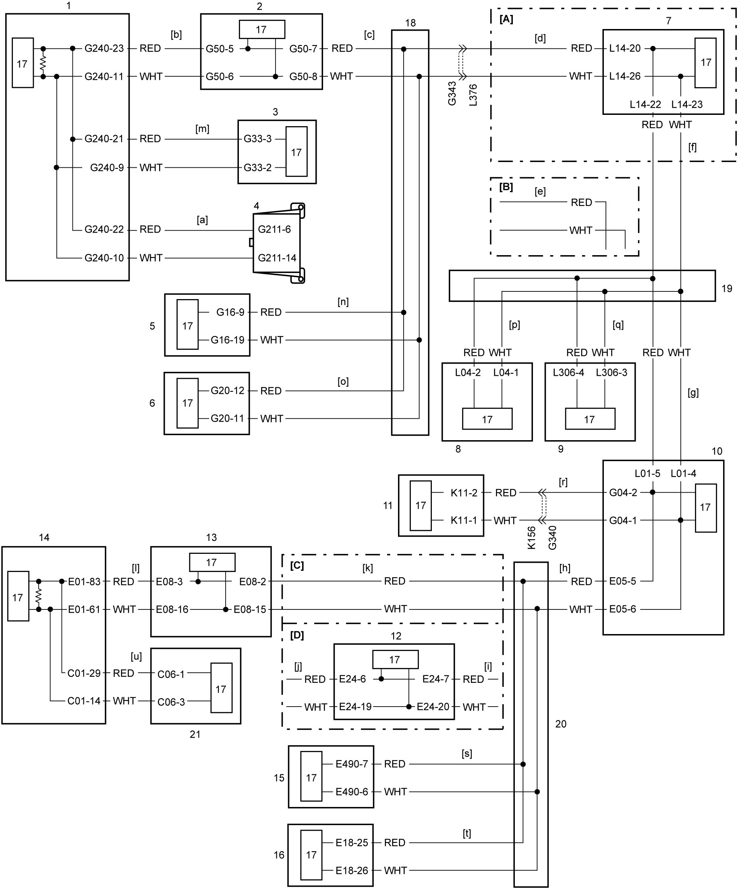
 "Expand image")
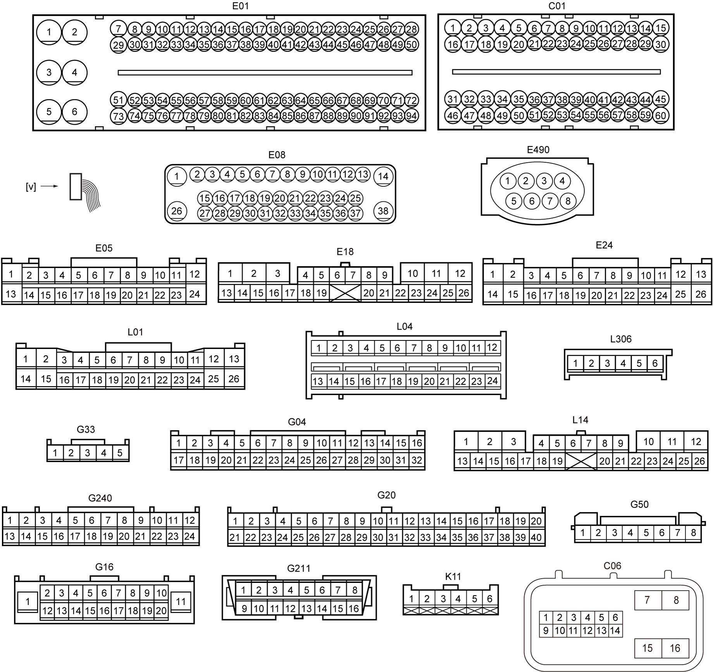
 "Expand image")
| [A]: | 4WD model | 4. | DLC | 13. | ESP® control module |
| [B]: | 2WD model | 5. | Keyless start control module | 14. | ECM |
| [C]: | Non-ENG A-STOP model | 6. | HVAC control module | 15. | RBS control module (RBS model) |
| [D]: | ENG A-STOP model | 7. | 4WD control module | 16. | Headlight auto leveling control module |
| [a] to [u]: | CAN communication line (linked with diagnosis flows [a] to [u] of “Diagnosis Flow Selection Table”) | 8. | SDM | 17. | CAN driver |
| [v]: | Connector view | 9. | TPMS control module (TPMS model) | 18. | J/C (G310) |
| 1. | Combination meter | 10. | BCM | 19. | J/C (L346) |
| 2. | P/S control module | 11. | Rain / light sensor | 20. | J/C (E346) |
| 3. | Steering angle sensor | 12. | ENG A-STOP control module | 21. | TCM (A/T model) |
Diagnosis Procedure
When “CAN Communication Bus Off” is detected in any control modules, or when it is not possible to communicate with any control modules / sensors with CAN using SUZUKI scan tool, perform the following procedure.
1)Connect oscilloscope to DLC when ignition is “OFF”.
2)Using oscilloscope, observe waveform in the following condition when ignition is “ON”.
| Channel | Probe | Terminal No. |
|---|---|---|
| 1 | + | G211-6 |
| – | Ground | |
| 2 | + | G211-14 |
| – | Ground |
3)Compare observed signal waveform with waveforms given as “Reference Waveform:”. Find the most similar signal waveform and identify the system in trouble and cause of trouble. 
4)Perform troubleshooting.
Reference Waveform
NOTE:
Waveforms in “Examples of abnormal waveforms” are selected examples of CAN communication waveforms seen when an abnormal condition occurs. However, these waveforms may not be exactly the same in appearance as observed waveforms. Therefore, to identify an abnormal condition, select the waveform that is most similar to the observed waveform from Examples of abnormal waveforms.
Normal waveform
| Normal waveform | Description | |||
|---|---|---|---|---|
|
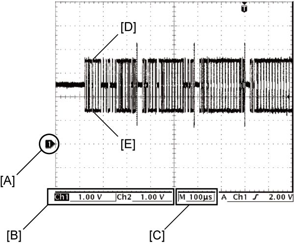
 "Expand image") |
Reference voltages for both CAN High signal and CAN Low signal are 2.5 V. Waveform of CAN High signal is 2.5 – 3.5 V and that of CAN Low signal is 2.5 – 1.5 V. | |||
| [A]: | Ground level of each channel | [D]: | Waveform of channel 1 (CAN High signal) | |
| [B]: | VOLT/DIV of each channel | [E]: | Waveform of channel 2 (CAN Low signal) | |
| [C]: | TIME/DIV of each channel | |||
Examples of abnormal waveforms
| Possible cause | Characteristic waveform | Description | |
|---|---|---|---|
| CAN High signal | CAN Low signal | ||
| Shorted to ground |
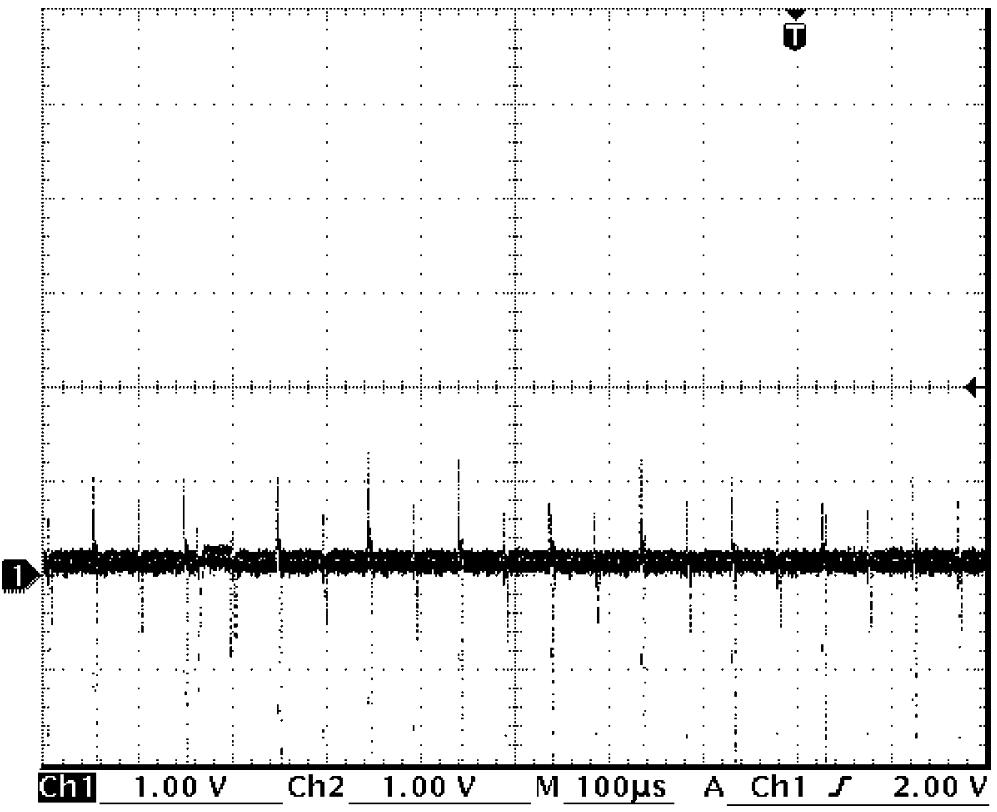
 "Expand image") |
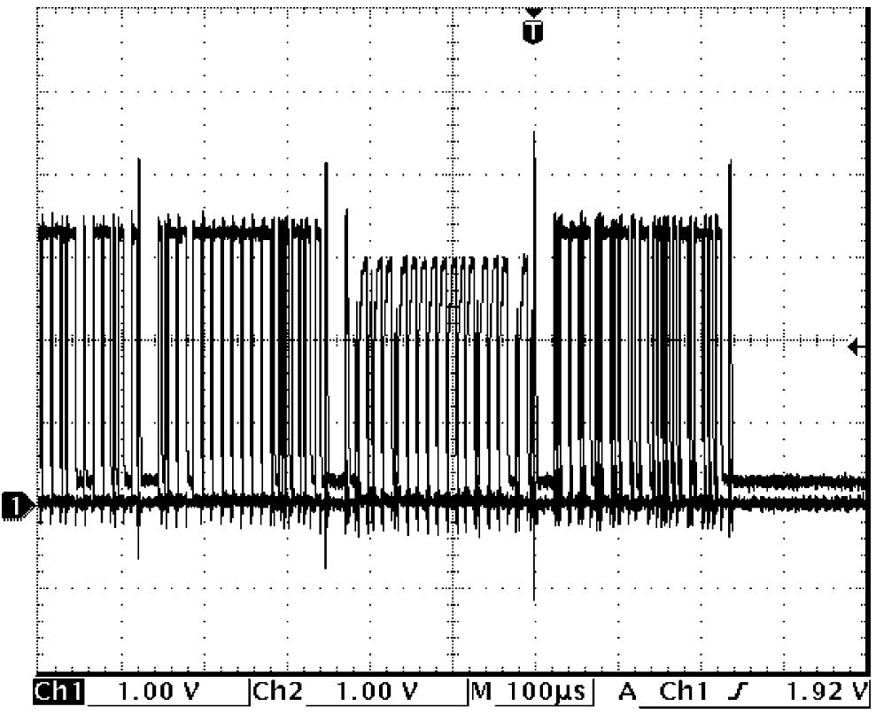
 "Expand image") |
In case CAN High signal wire is shorted to ground circuit Both of CAN High signal and CAN Low signal are fixed to GND level (0 V). In case CAN Low signal wire is shorted to ground circuit Reference voltages for both of CAN High signal and CAN Low signal are GND level (0 V) and CAN High signal waveform oscillates irregularly.
•CAN High signal: Between 0 V and 3.5 V
•CAN Low signal: Fixed to 0 V |
| Opened |
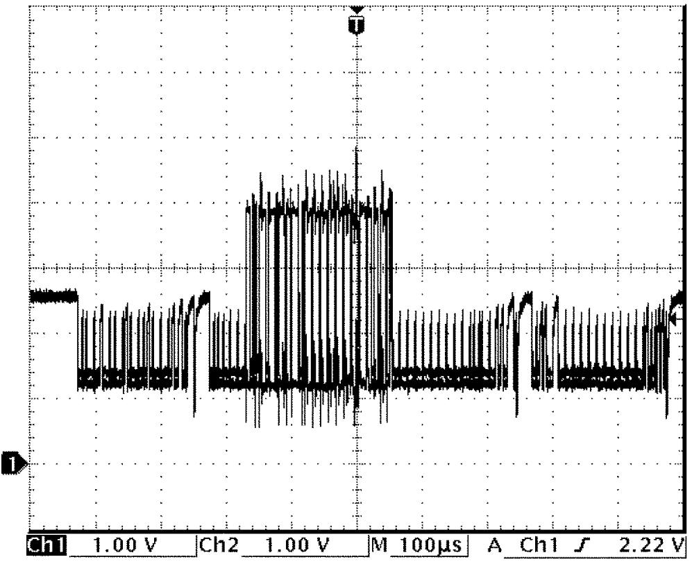
 "Expand image") |
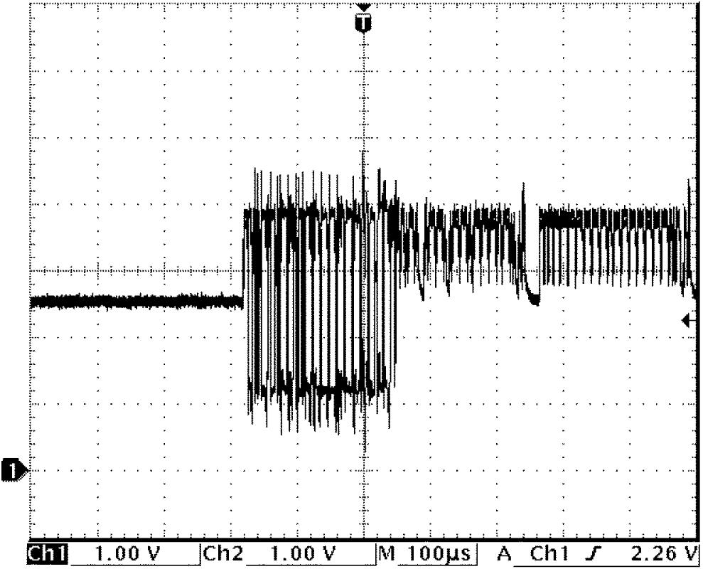
 "Expand image") |
In case CAN High signal wire is open Reference voltages for both CAN High signal and CAN Low signal are 2.5 V and these waveforms oscillate irregularly.
•CAN High signal: Between 4.0 V and 1.0 V
In case CAN Low signal wire is open•CAN Low signal: Between 2.5 V and 1.0 V Reference voltages for both of CAN High signal and CAN Low signal are 2.5 V and these waveforms oscillate irregularly.
•CAN High signal: Between 2.5 V and 4.0 V
•CAN Low signal: Between 1.0 V and 4.0 V |
| Shorted to power supply circuit (12 V) |
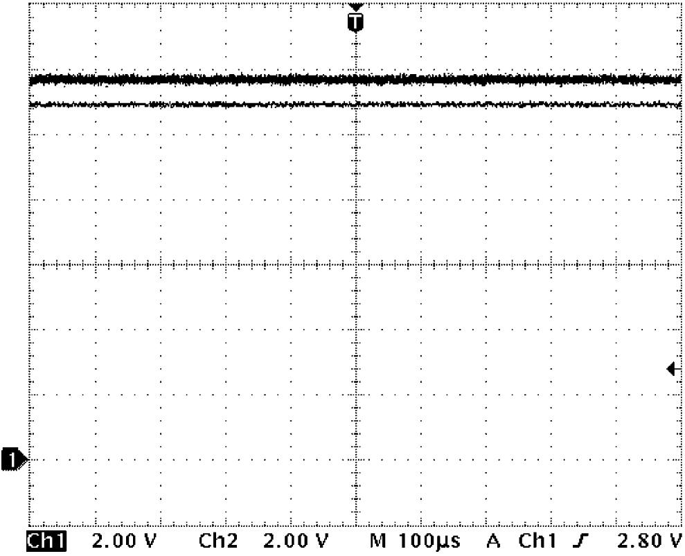
 "Expand image") |
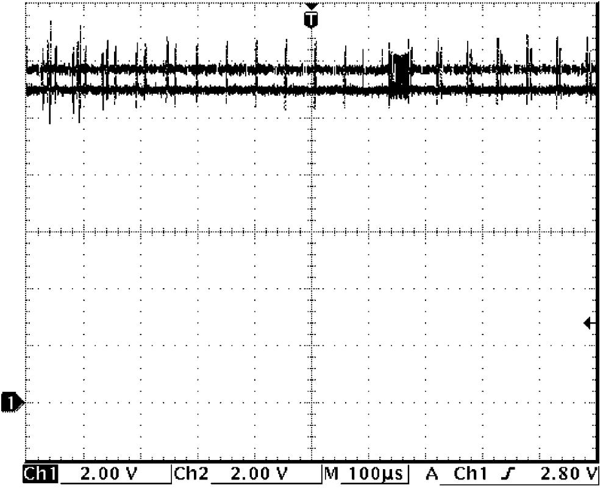
 "Expand image") |
In case CAN High signal wire is shorted to power supply circuit (12 V) CAN High signal is fixed to 12 V and CAN Low signal is fixed to 11 V. In case CAN Low signal wire is shorted to power supply circuit (12 V) CAN High signal is fixed to 11 V and CAN Low signal is fixed to 12 V. |
| Shorted to power supply circuit (5 V) |
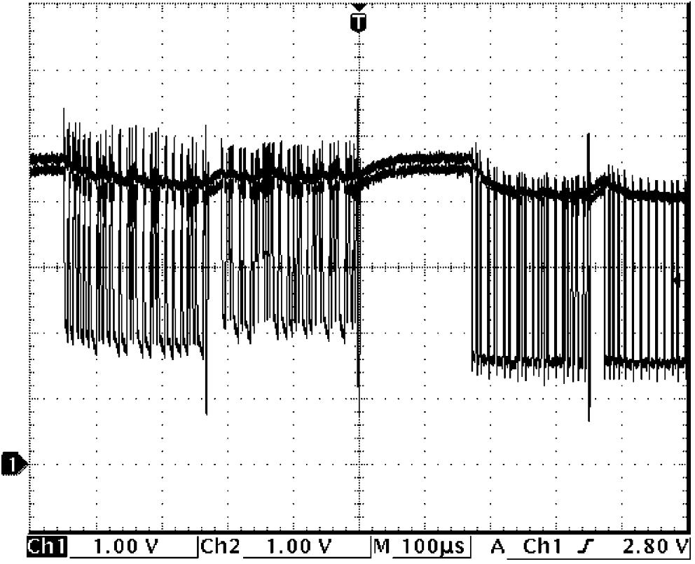
 "Expand image") |
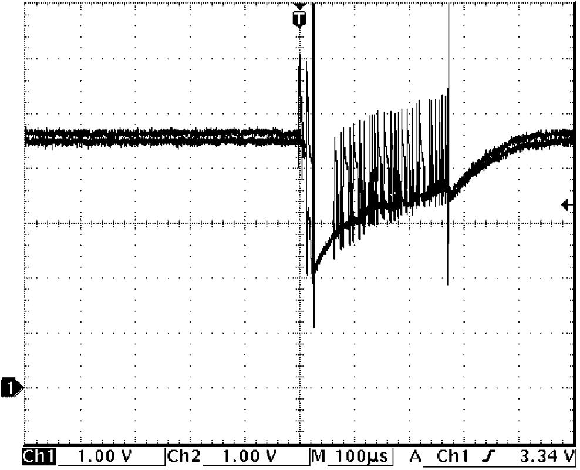
 "Expand image") |
In case CAN High signal wire is shorted to power supply circuit (5 V) Reference voltages for both CAN High signal and CAN Low signal are 4.5 V and these waveforms oscillate irregularly.
•CAN High signal: Between 5.5 V and 3.5 V
In case CAN Low signal wire is shorted to power supply circuit (5 V)•CAN Low signal: Between 5.0 V and 1.0 V Reference voltage is 4.5 V and phase is the same for both CAN High signal and CAN Low signal, and waveforms oscillate irregularly between 6.0 V and 1.0 V. |
| CAN High signal and CAN Low signal wires are shorted to each other |
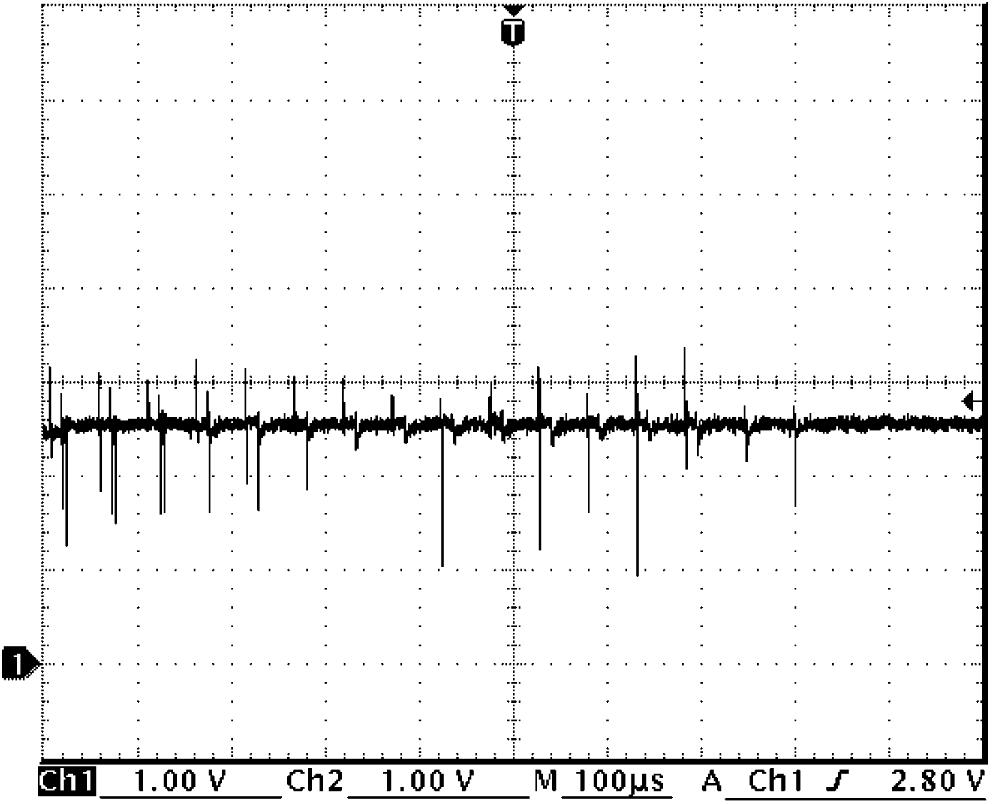
 "Expand image") |
Both of CAN High signal and CAN Low signal are fixed to near 2.5 V. | |
Troubleshooting
NOTE:
•Before diagnosing trouble, check equipment of vehicle being serviced as well as control modules and sensors connected to CAN communication line.
•Before using scan tool, read its Operator’s Manual to know how to use it.
•When performing “Communication Bus Check” using SUZUKI scan tool in this troubleshooting, refer to Judgment of Communication Bus Check:K14C Model.
•Before using scan tool, read its Operator’s Manual to know how to use it.
•When performing “Communication Bus Check” using SUZUKI scan tool in this troubleshooting, refer to Judgment of Communication Bus Check:K14C Model.
| Step | Action | Yes | No |
|---|---|---|---|
| 1 |
CAN communication circuit check
1)Disconnect negative (–) cable at battery.
2)Disconnect connectors from all the control modules and sensors communicating by CAN.
3)Check for proper connection to each CAN communication circuit at all control modules / sensors (communicating by CAN) connectors and DLC.
4)If connections are OK, check the following points of each CAN communication circuit based on results found in Step 3) of Diagnosis Procedure.
•Open circuit
•Short to power circuit •Short to ground circuit •Short to CAN communication wire with each other Is check result OK?
|
Go to Step 2.
|
Repair or replace defective wire harness.
|
| 2 |
ECM communication check
1)Connect “E01” connector to ECM.
2)Measure resistance between “E08-3” and “E08-16” terminals of ESP® control module connector.
Is resistance 114 – 134 Ω?
|
•ENG A-STOP model: Go to Step 3.
•Non-ENG A-STOP model: Go to Step 5. |
Replace ECM and recheck DTC.
|
| 3 |
ESP® control module communication check
1)Connect “E08” connector to ESP® control module.
2)Measure resistance between “E24-6” and “E24-19” terminals of ENG A-STOP control module connector.
Is resistance 114 – 134 Ω?
|
Go to Step 4.
|
Replace ESP® control module and recheck DTC.
|
| 4 |
ENG A-STOP control module communication check
1)Connect “E24” connector to ENG A-STOP control module.
2)Measure resistance between “E05-5” and “E05-6” terminals of BCM connector.
Is resistance 114 – 134 Ω?
|
Go to Step 6.
|
Replace ENG A-STOP control module and recheck DTC.
|
| 5 |
ESP® control module communication check
1)Connect “E08” connector to ESP® control module.
2)Measure resistance between “E05-5” and “E05-6” terminals of BCM connector.
Is resistance 114 – 134 Ω?
|
Go to Step 6.
|
Replace ESP® control module and recheck DTC.
|
| 6 |
BCM communication check
1)Connect “E05”, “L01” and “G04” connectors to BCM.
2)Measure resistance between the following terminals.
•2WD model: Between “G50-7” and “G50-8” terminals of P/S control module connector
•4WD model: Between “L14-22” and “L14-23” terminals of 4WD control module connector Is resistance 114 – 134 Ω?
|
•2WD model: Go to Step 8.
•4WD model: Go to Step 7. |
Replace BCM and recheck DTC.
|
| 7 |
4WD control module communication check
1)Connect “L14” connector to 4WD control module.
2)Measure resistance between “G50-7” and “G50-8” terminals of P/S control module connector.
Is resistance 114 – 134 Ω?
|
Go to Step 8.
|
Replace 4WD control module and recheck DTC.
|
| 8 |
P/S control module communication check
1)Connect “G50” connector to P/S control module.
2)Measure resistance between “G240-11” and “G240-23” terminals of combination meter connector.
Is resistance 114 – 134 Ω?
|
Go to Step 9.
|
Replace P/S control module and recheck DTC.
|
| 9 |
Combination meter communication check
1)Connect “G240” connector to combination meter.
2)Measure resistance between “G211-6” and “G211-14” terminals of DLC.
Is resistance 57 – 67 Ω?
|
Go to Step 10.
|
Replace combination meter and recheck DTC.
|
| 10 |
Keyless start control module, HVAC control module, steering angle sensor, SDM, TPMS control module, rain / light sensor, RBS control module, headlight auto leveling control module and TCM communication check
1)Perform Communication Check:K14C Model.
Is check result OK?
|
Check for intermittent trouble.
|
Replace defective control module or sensor and recheck DTC.
|